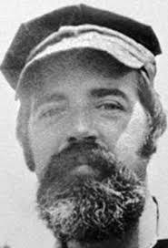

New Jersey

In New Jersey, Andrew Cunanan was driving Lee Miglin’s Lexus. Detectives hypothesized that
Cunanan heard an FBI warning on the radio regarding Lee Miglin’s Lexus. After
listening to this on the radio, Cunanan probably realized that he needed to get rid of Lee Miglin’s
car. He drove Miglin’s car to a cemetery in Pennsville Township, New Jersey. He parked in an
obscure location in Finn’s Point National Cemetery. He then went to the graveskeeper's office
where he murdered the caretaker, William Reese. Cunanan murdered Reese simply to get his 1995
red Chevrolet pickup truck which he drove to Miami.